The Climb, floor by floor: 1 to 30
Each floor played in the real game (headless browser, time stepped by hand): the route bot from camp to gate, every person, pack, door and the ruler, the map, the phone view, the props probe, the texts against the lore. Faults that were clearly slips were fixed (blue); bigger ones or matters of taste are listed for you (red).
For you to decide
- Floor 1: The ruler's name: Captain or Admiral? The floor calls its ruler “the Drowned Captain” (keeper's line, the lair, the quest, the boss card); the Codex (climb/rulers.md, climb/sea.md) says the Drowned Admiral rules floors 1 and 2, and floor 2 calls him the Drowned Admiral. Its model is the Admiral's. Renaming floor 1's to “the Drowned Admiral” is five strings in gen/harbour.ts and a re-bake; say if you want it.
- Floor 1: On the map, “The gate up” sits on “The camp”. The gate is beside the camp on every floor, so their two labels overlap on the M map (more on a phone). Small; a fix would nudge one label in map.ts.
- Floor 6: The Pearl Tyrant is a man in the Codex, a crowned woman on the floor. The Codex (climb/rulers.md): “A pearl merchant ... He drowned holding the strongbox.” Floor 6 draws him with the Gull Queen's model (sea_queen, pieces/rulerModels.ts RULER_OF[6]), a crowned woman in a gown. Either the Codex says “she”, or floor 6 takes the Admiral's or the Judge's model (one number in RULER_OF; the three Sea models would then not be three floors each).
- Floor 7: The Bell Below is a bell in the Codex, a judge on the floor. The Codex: “The harbour's old bell ... It rings underwater, and something answers.” Floor 7 draws it with the Tide Judge's model (a robed figure), as RULER_OF puts the Judge on floors 5, 7 and 8 (floor 8's Lantern Leviathan, “a great fish”, too). The ruler models' names and floors were left to you when the models were made; this is one more reason to look: the Codex could say the bell's ringer is what climbers fight, or these two floors get rulers of their own.
Fixed
- Floor 1: The market had two names. The map, the keeper and the place said “the fish market”, but the main quest's step said “Clear the oyster market” and its waystone was “The oyster market stone”; the step “Light the lighthouse and the signal fire” named a place the map calls “The beacon”. Cause: the floor's maker (src/tower/world/gen/harbour.ts) renamed the places but not the words that name them. Now the steps and the stone follow the new names (only these three strings changed in the baked floor).
- Floor 2: Names on the M map lay over each other (every floor). Two places or a door close together wrote their names in the same spot: “The signal fire” ran into “The drowned chapel”, “The gate up” sat on “The camp” (on every floor: the gate is beside the camp). Now a name that would cover one already written steps one line away (a door's up, a place's down). Only the map's drawing changed (src/tower/world/map.ts).
- Floor 4: “The salt pans is overrun”. The keeper's greeting is made from the main place's name with “is overrun”; a plural place read wrong (here, and “The drying racks is overrun” on floor 5). The sea's maker (src/tower/world/gen/sea.ts) now says “are” for a name ending in s; floors 2 to 10 re-baked, and only these two lines changed.
Floors
I. The Sea
Floor 1: The Drowned Harbour
Plays from the camp to the gate with no error and no stuck spot; every person, pack, door and the ruler work, the ruler in its own model. One slip in the words fixed (the market had two names); the ruler's name left for you.
fixedThe market had two names. The map, the keeper and the place said “the fish market”, but the main quest's step said “Clear the oyster market” and its waystone was “The oyster market stone”; the step “Light the lighthouse and the signal fire” named a place the map calls “The beacon”. Cause: the floor's maker (src/tower/world/gen/harbour.ts) renamed the places but not the words that name them. Now the steps and the stone follow the new names (only these three strings changed in the baked floor).


listThe ruler's name: Captain or Admiral? The floor calls its ruler “the Drowned Captain” (keeper's line, the lair, the quest, the boss card); the Codex (climb/rulers.md, climb/sea.md) says the Drowned Admiral rules floors 1 and 2, and floor 2 calls him the Drowned Admiral. Its model is the Admiral's. Renaming floor 1's to “the Drowned Admiral” is five strings in gen/harbour.ts and a re-bake; say if you want it.

listOn the map, “The gate up” sits on “The camp”. The gate is beside the camp on every floor, so their two labels overlap on the M map (more on a phone). Small; a fix would nudge one label in map.ts.

okThe props the probe flagged. 14 “float” are pines on the hills past the edge (the probe measures them against the play ground, not the hill under them) and boats on the sea; 56 “gap” are pines on the cliff top whose root side hangs over the cliff. Each looked at from low: they stand on their ground.


What was measured
- Reachable from the camp: 34968 m²; 51 spots of the floor's data, 0 cut off
- Props probe: 14 float, 56 gap, 0 buried, 0 in cover (each looked at; see below)
- Grass and small things on ground steeper than 31°: 0
- Packs table for the open world (server/climb-packs.mjs): matches
- Route bot (Lyra): cleared in 1604 game s, every checkpoint reached; 23 kills, 2 falls, stars 1101; ruler tries 1, gate tries 3; page errors 0
- Ruler: The Drowned Captain (Anchor, cannon and tide), model models/tower/sea_admiral_v4.glb, loaded yes after 2419 ms of real time
- Frame check at the busiest spot (-71, -67), 5 units awake: median 11.4, 10.8, 10.4 ms, p95 18, 17.6, 14.7 ms (desktop, machine shared: rough)
- Console errors while taking the pictures: 0
Not checked: the shared packs online (alone a cleared pack does not come back: as designed, pipeline/designs/climb-open-world.md); buying at the trader (the card and prices shown; the bot's heals use it)


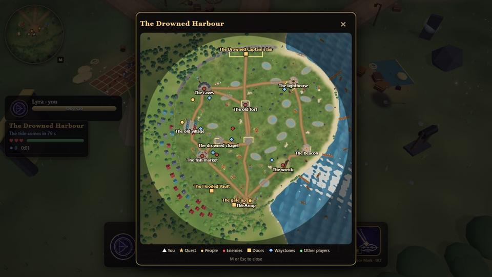


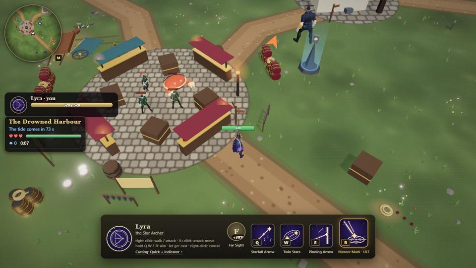

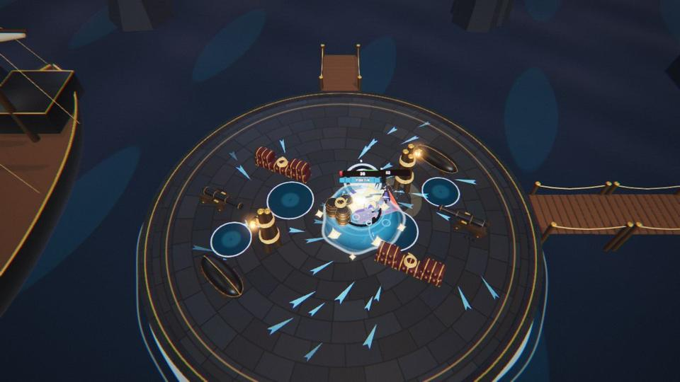


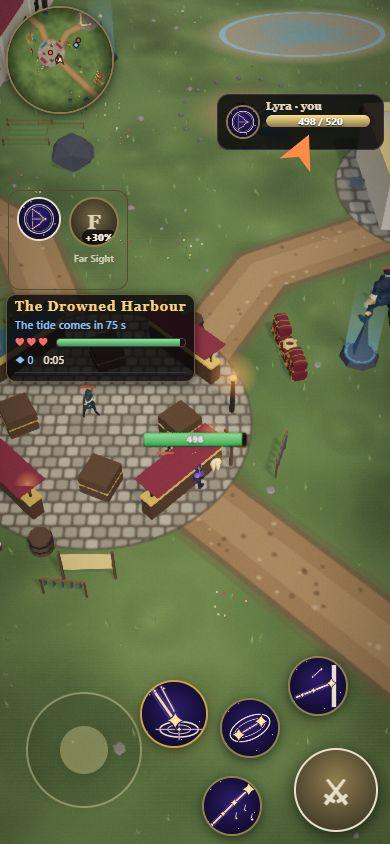
Floor 2: The Salt Docks
Clean: the route bot cleared it with all four stars and no fall, the rival (Hank), the trial, the ruler (the Drowned Admiral, own model) and the gate (Vesper) all played; no console error. The M map's names stood on each other: fixed for every floor.
fixedNames on the M map lay over each other (every floor). Two places or a door close together wrote their names in the same spot: “The signal fire” ran into “The drowned chapel”, “The gate up” sat on “The camp” (on every floor: the gate is beside the camp). Now a name that would cover one already written steps one line away (a door's up, a place's down). Only the map's drawing changed (src/tower/world/map.ts).


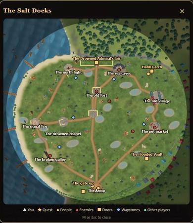
okThe props the probe flagged. “Float”: pines on the hills past the edge, boats on the sea, and the slats of a jetty 9 cm over the sand; “gap”: houses on the hillside (they stand on their stone plinths, as set right in the props pass) and pines on the cliff top; one stone 22 cm under the sand. Looked at from low: nothing in the air.

What was measured
- Reachable from the camp: 34918 m²; 51 spots of the floor's data, 0 cut off
- Props probe: 25 float, 54 gap, 1 buried, 0 in cover (each looked at; see below)
- Grass and small things on ground steeper than 31°: 0
- Packs table for the open world (server/climb-packs.mjs): matches
- Route bot (Lyra): cleared in 1729 game s, every checkpoint reached; 23 kills, 0 falls, stars 1111; ruler tries 1, gate tries 1; page errors 0
- Ruler: The Drowned Admiral (Fleet, cannon and tide), model models/tower/sea_admiral_v4.glb, loaded yes after 5095 ms of real time
- Frame check at the busiest spot (14, -54), 5 units awake: median 10.7, 11.3, 11 ms, p95 17.5, 17.2, 14.8 ms (desktop, machine shared: rough)
- Console errors while taking the pictures: 0
Not checked: the shared packs online; buying at the trader (card and prices shown)

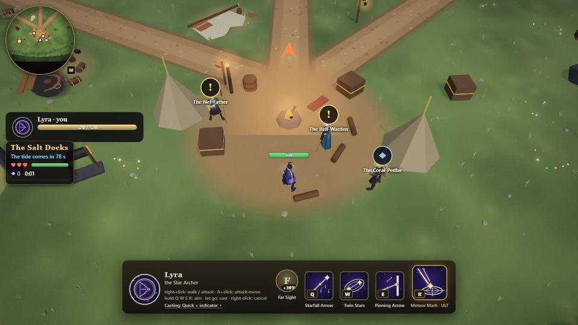


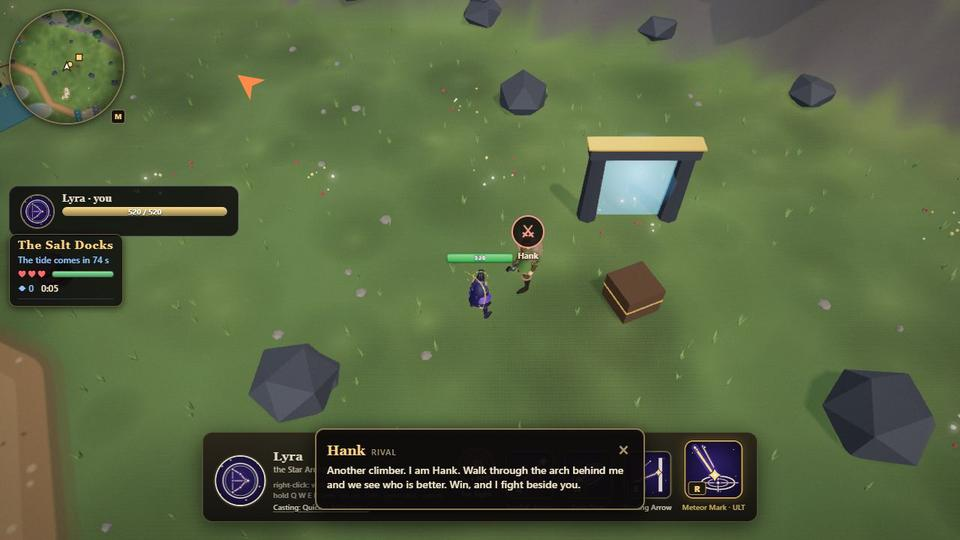

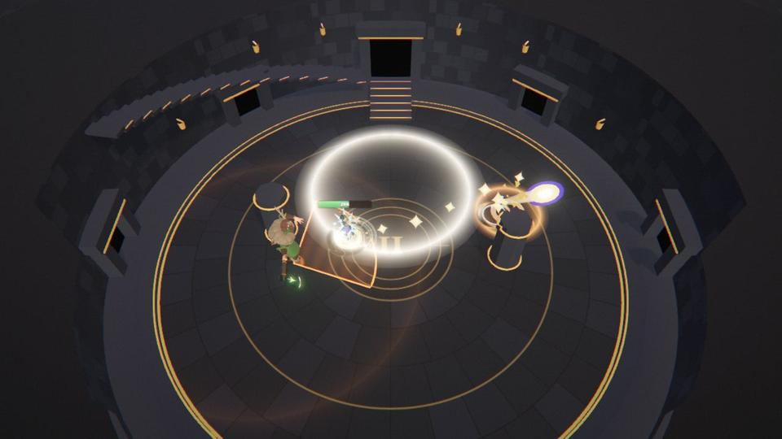

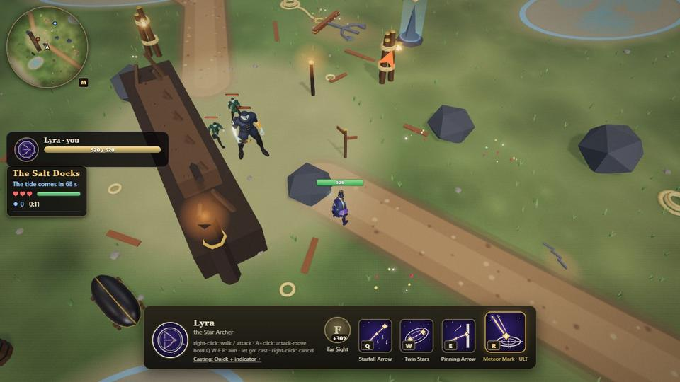

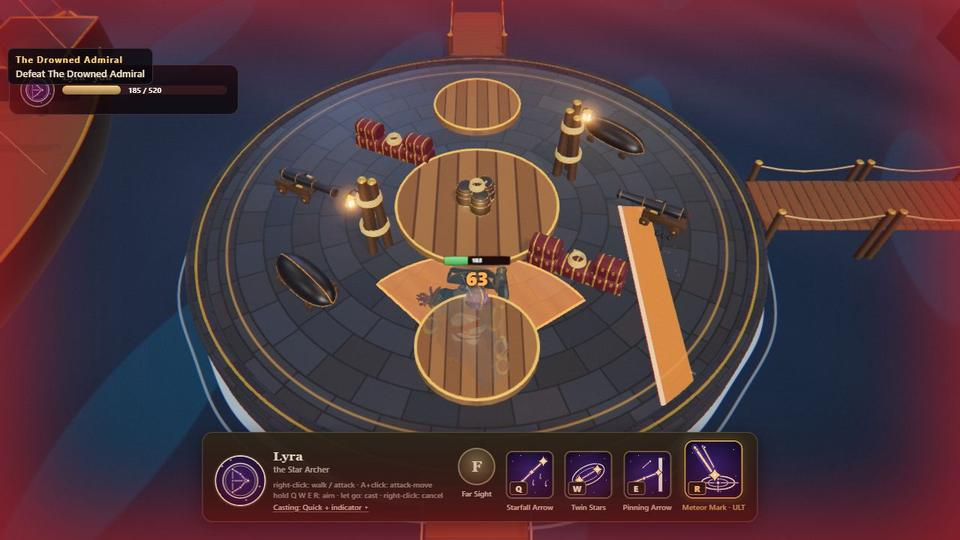

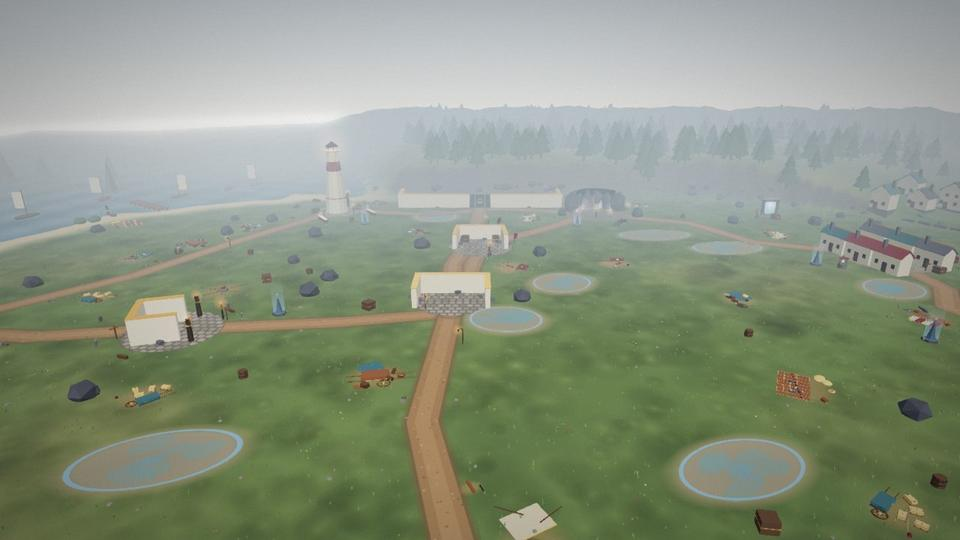

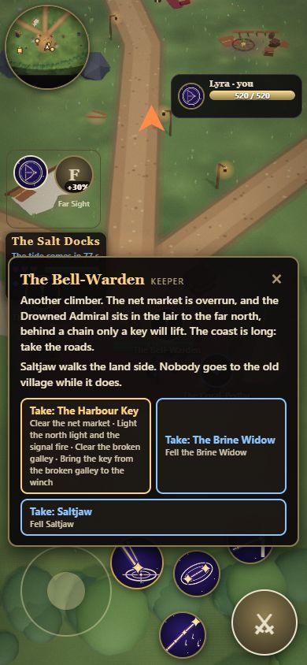

Floor 3: Gull Point
Clean: cleared with four stars and no fall; the rival (Nyx), the trial (a horde), the ruler (the Salt King, in the Admiral's model tinted) and the gate (Tempo) all played; no console error, every spot reachable, the texts match the Codex (the Salt King rules floor 3).
okA boss that stands between the camera and the hero fades. In the first pictures the Salt King looked see-through. That is the duel's own rule (duel.ts: a boss that hides the hero fades to a tenth), not a fault: with the hero on its other side it stands in full.

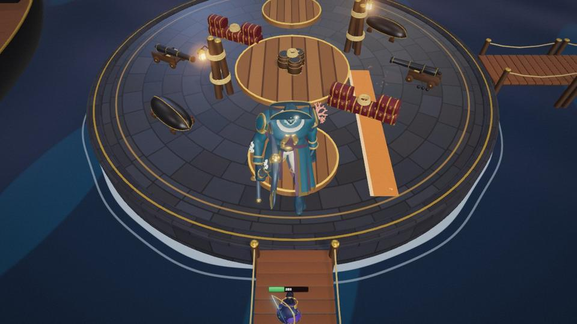
okThe props the probe flagged. As on floors 1 and 2: pines on the hills and the cliff top, boats on the sea, a stone just under the sand; two pines whose trunks touch the edge of a cliff-top rock. Nothing in the air.
What was measured
- Reachable from the camp: 34953 m²; 51 spots of the floor's data, 0 cut off
- Props probe: 16 float, 80 gap, 1 buried, 2 in cover (each looked at; see below)
- Grass and small things on ground steeper than 31°: 0
- Packs table for the open world (server/climb-packs.mjs): matches
- Route bot (Lyra): cleared in 1480 game s, every checkpoint reached; 23 kills, 0 falls, stars 1111; ruler tries 1, gate tries 1; page errors 0
- Ruler: The Salt King (Crowned in brine), model models/tower/sea_admiral_v4.glb, loaded yes after 4447 ms of real time
- Frame check at the busiest spot (-76, 39), 6 units awake: median 11.8, 9.4, 9.6 ms, p95 18, 11.8, 12.8 ms (desktop, machine shared: rough)
- Console errors while taking the pictures: 0
Not checked: the shared packs online; buying at the trader (card and prices shown)

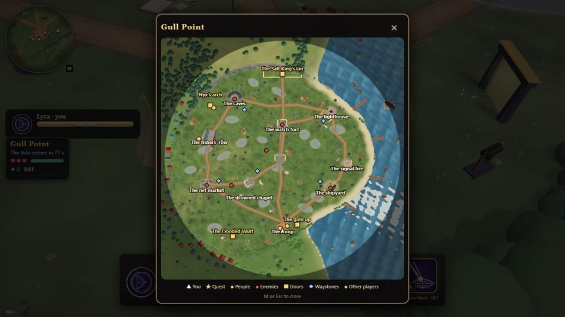


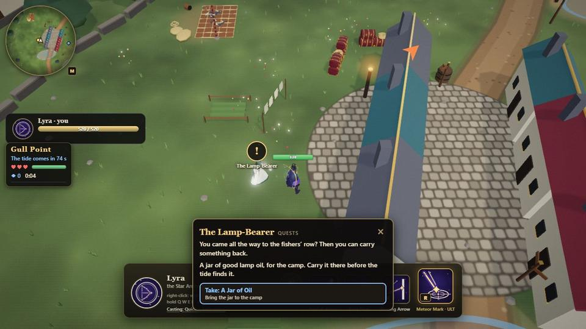


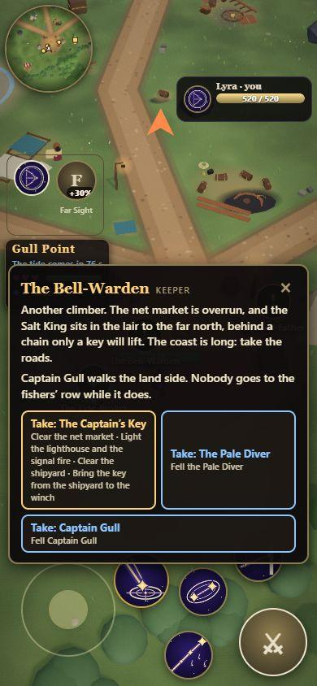
Floor 4: The Sunken Mile
Clean but for one line of the keeper's: cleared with four stars and no fall; the rival (Auriel), the trial, the ruler (Mother of Wrecks, in the Gull Queen's model) and the gate (Ada) all played; no console error, every spot reachable.
fixed“The salt pans is overrun”. The keeper's greeting is made from the main place's name with “is overrun”; a plural place read wrong (here, and “The drying racks is overrun” on floor 5). The sea's maker (src/tower/world/gen/sea.ts) now says “are” for a name ending in s; floors 2 to 10 re-baked, and only these two lines changed.


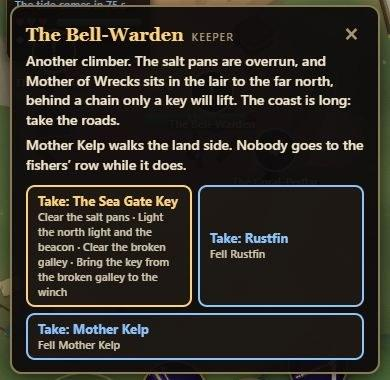
okThe props the probe flagged. Pines on the hills and the cliff top, boats on the sea, three shells 10 cm over the sand, the gold edge of the lair's wall where it runs into the hill (seen and left in the props pass). Nothing in the air.
What was measured
- Reachable from the camp: 35004 m²; 51 spots of the floor's data, 0 cut off
- Props probe: 18 float, 58 gap, 1 buried, 0 in cover (each looked at; see below)
- Grass and small things on ground steeper than 31°: 0
- Packs table for the open world (server/climb-packs.mjs): matches
- Route bot (Lyra): cleared in 1613 game s, every checkpoint reached; 23 kills, 0 falls, stars 1111; ruler tries 1, gate tries 1; page errors 0
- Ruler: Mother of Wrecks (She keeps what sinks), model models/tower/sea_queen_v4.glb, loaded yes after 5111 ms of real time
- Frame check at the busiest spot (20, -54), 6 units awake: median 13.3, 14.1, 11.2 ms, p95 24.8, 21.7, 16.8 ms (desktop, machine shared: rough)
- Console errors while taking the pictures: 0
Not checked: the shared packs online; buying at the trader (card and prices shown)


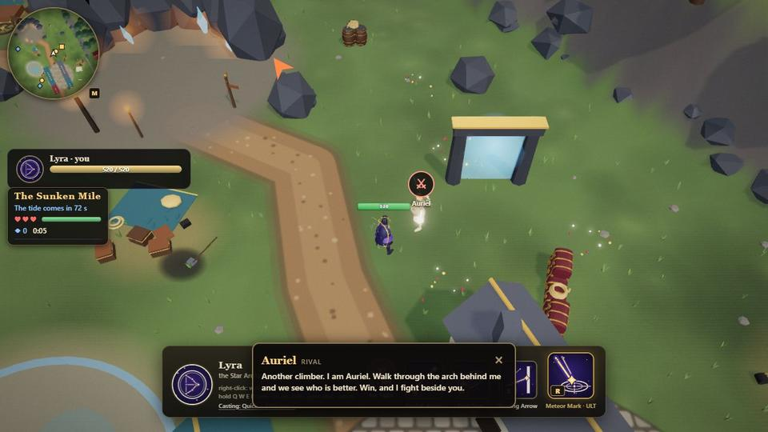

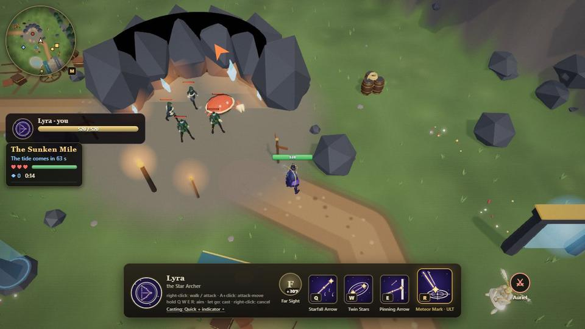

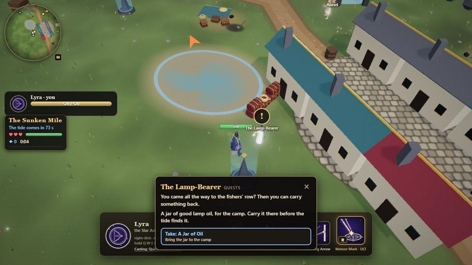


Floor 5: Wreckers’ Cove
Clean: cleared with four stars and no fall; the rival (Sefu), the trial (The Salt Cellar), the ruler (the Tide Judge, own model) and the gate (Bram) all played; no console error, every spot reachable. The keeper's “drying racks are overrun” is the line fixed on floor 4.
okThe props the probe flagged. Pines on the hills and the cliff top, boats on the sea, houses on their plinths on the hillside. Nothing in the air.
What was measured
- Reachable from the camp: 34930 m²; 51 spots of the floor's data, 0 cut off
- Props probe: 19 float, 68 gap, 0 buried, 0 in cover (each looked at; see below)
- Grass and small things on ground steeper than 31°: 0
- Packs table for the open world (server/climb-packs.mjs): matches
- Route bot (Lyra): cleared in 1763 game s, every checkpoint reached; 23 kills, 0 falls, stars 1111; ruler tries 1, gate tries 1; page errors 0
- Ruler: The Tide Judge (Every tide a sentence), model models/tower/sea_judge_v4.glb, loaded yes after 3689 ms of real time
- Frame check at the busiest spot (-64, 36), 6 units awake: median 3.2, 3.5, 4.3 ms, p95 4.8, 4.5, 6.5 ms (desktop, machine shared: rough)
- Console errors while taking the pictures: 0
Not checked: the shared packs online; buying at the trader (card and prices shown)


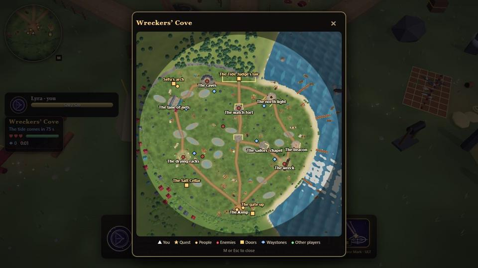

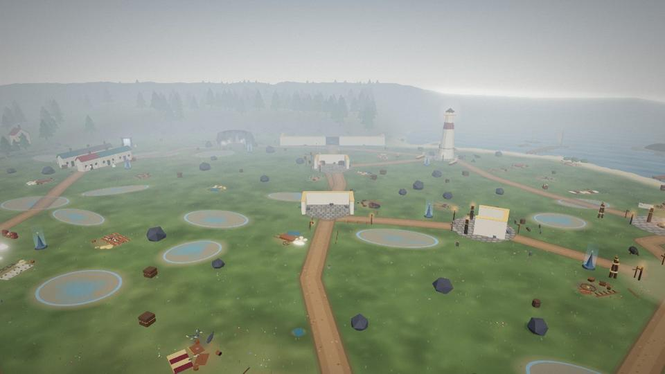

Floor 6: The Lantern Coast
Plays clean: cleared, no console error, every spot reachable; the rival (Wick), the trial, the ruler (the Pearl Tyrant) and the gate (Mum) all played. The bot needed four tries at Mum's gate (balance, not a fault). One lore mismatch for you.
listThe Pearl Tyrant is a man in the Codex, a crowned woman on the floor. The Codex (climb/rulers.md): “A pearl merchant ... He drowned holding the strongbox.” Floor 6 draws him with the Gull Queen's model (sea_queen, pieces/rulerModels.ts RULER_OF[6]), a crowned woman in a gown. Either the Codex says “she”, or floor 6 takes the Admiral's or the Judge's model (one number in RULER_OF; the three Sea models would then not be three floors each).

okThe props the probe flagged. Pines on the hills and the cliff top, boats on the sea, houses on their plinths, the lair wall's gold edge into the hill, two stones and a tuft just under the ground. Nothing in the air.
What was measured
- Reachable from the camp: 34872 m²; 51 spots of the floor's data, 0 cut off
- Props probe: 12 float, 56 gap, 2 buried, 0 in cover (each looked at; see below)
- Grass and small things on ground steeper than 31°: 0
- Packs table for the open world (server/climb-packs.mjs): matches
- Route bot (Lyra): cleared in 1964 game s, every checkpoint reached; 23 kills, 3 falls, stars 1100; ruler tries 1, gate tries 4; page errors 0
- Ruler: The Pearl Tyrant (Hoarder of the shallows), model models/tower/sea_queen_v4.glb, loaded yes after 5659 ms of real time
- Frame check at the busiest spot (15, -74), 5 units awake: median 13.9, 12.1, 13.8 ms, p95 24.4, 20.8, 23 ms (desktop, machine shared: rough)
- Console errors while taking the pictures: 0
Not checked: the shared packs online; buying at the trader (card and prices shown)

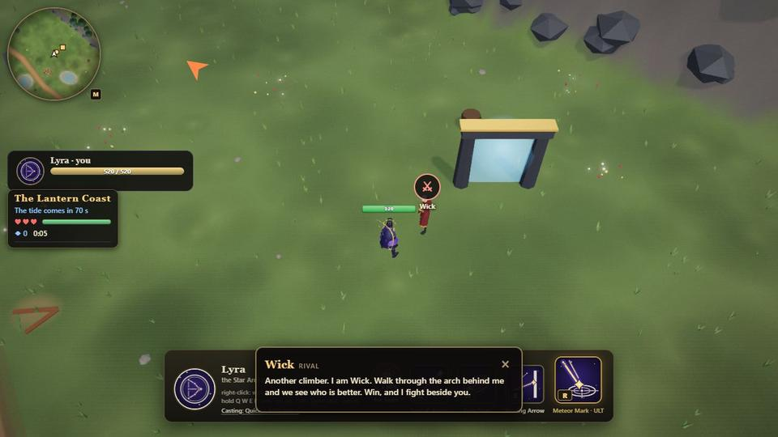


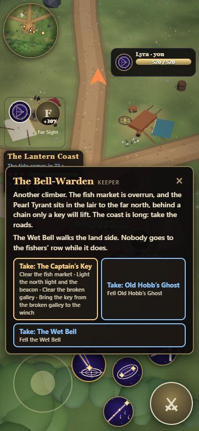
Floor 7: Kelp Hollow
Plays clean: cleared, no console error, every spot reachable; the rival (Silvane), the trial (a horde), the ruler (the Bell Below; the bot lost the first try and won the second, as a person may) and the gate (Kaia) all played.
listThe Bell Below is a bell in the Codex, a judge on the floor. The Codex: “The harbour's old bell ... It rings underwater, and something answers.” Floor 7 draws it with the Tide Judge's model (a robed figure), as RULER_OF puts the Judge on floors 5, 7 and 8 (floor 8's Lantern Leviathan, “a great fish”, too). The ruler models' names and floors were left to you when the models were made; this is one more reason to look: the Codex could say the bell's ringer is what climbers fight, or these two floors get rulers of their own.

okThe props the probe flagged. Pines on the hills and the cliff top, boats on the sea, houses on their plinths, three shells just under the sand. Nothing in the air.
What was measured
- Reachable from the camp: 34888 m²; 51 spots of the floor's data, 0 cut off
- Props probe: 17 float, 81 gap, 3 buried, 0 in cover (each looked at; see below)
- Grass and small things on ground steeper than 31°: 0
- Packs table for the open world (server/climb-packs.mjs): matches
- Route bot (Lyra): cleared in 1841 game s, every checkpoint reached; 23 kills, 1 falls, stars 1101; ruler tries 2, gate tries 1; page errors 0
- Ruler: The Bell Below (It rings the sea in), model models/tower/sea_judge_v4.glb, loaded yes after 4851 ms of real time
- Frame check at the busiest spot (-65, 29), 6 units awake: median 12.9, 11.6, 11.1 ms, p95 23.1, 21.4, 15.6 ms (desktop, machine shared: rough)
- Console errors while taking the pictures: 0
Not checked: the shared packs online; buying at the trader (card and prices shown)

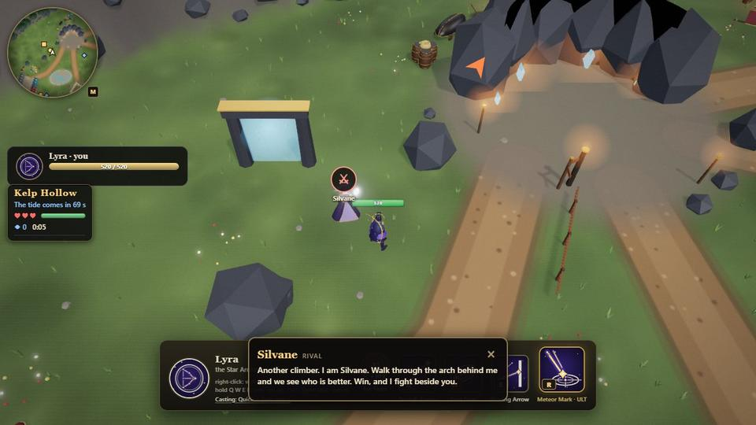

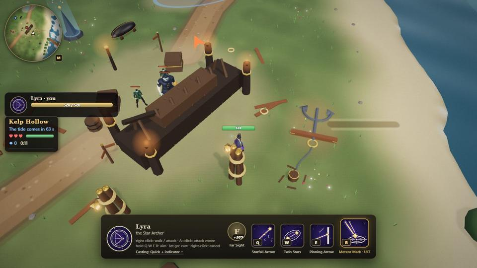